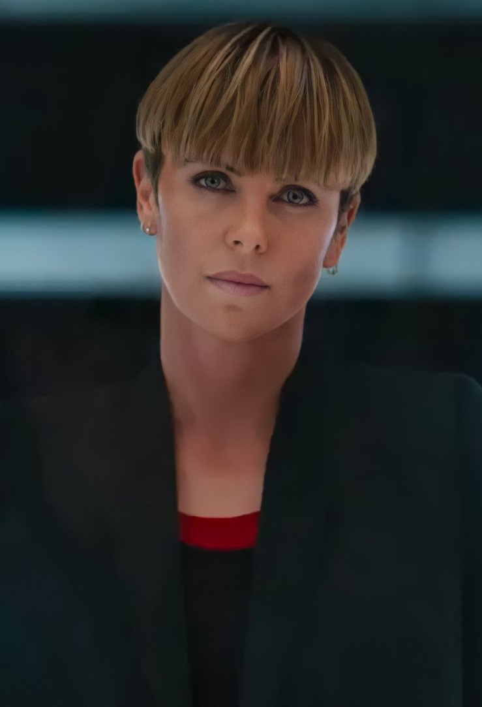
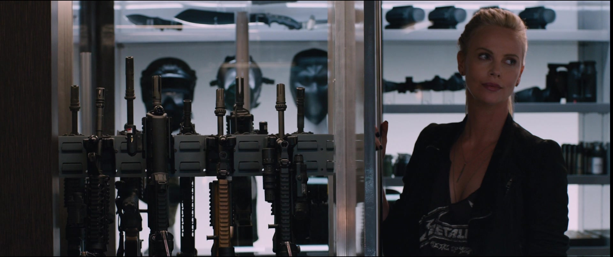
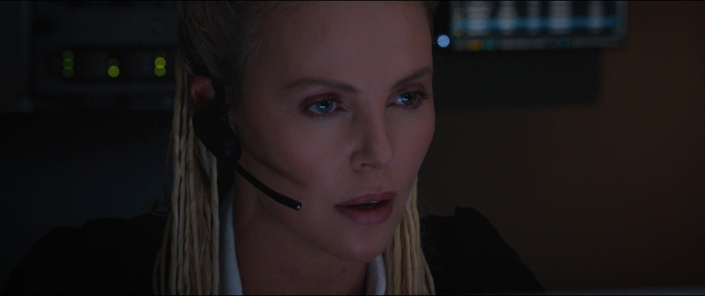
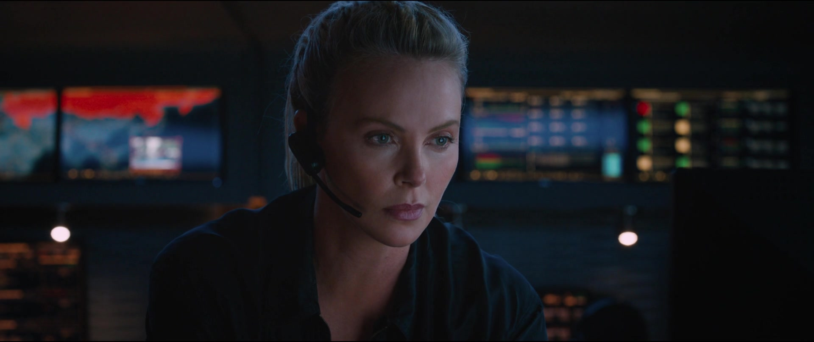
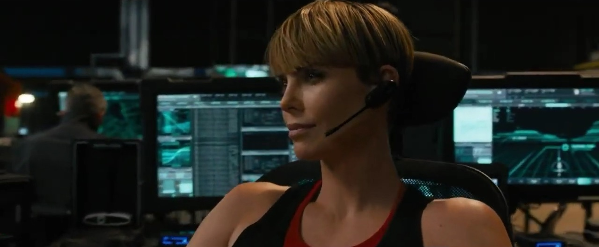
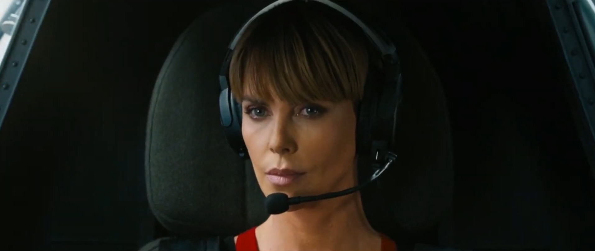
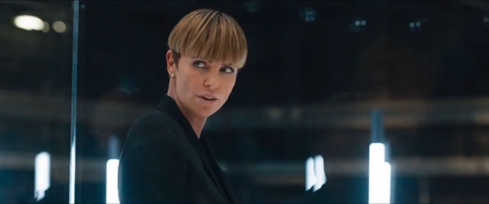

Cipher is the alias of a cyberterrorist who was introduced into the Fast and Furious franchise in the eighth film. She was introduced as an overarching villain of all the previous movies, having been revealed to have ties to previous villains that came after The Fast Family.
Cipher is an adept hacker, one who has managed to keep her identity from becoming public knowledge. While not unknown, she has managed to fool other hackers and government authority into thinking she is an organization and not a person. Cipher travels constantly and scrubs her digital footprint from known databases frequently.
Cipher is the only villain in the franchise who has not only been successful, to some extent, in carrying out her plans, but is also the only villain who has been able to escape capture more than once. Having escaped in both The Fate of the Furious and F9.
Cipher is a powerful, tenacious, manipulative and psychopathic woman, described as "the ultimate definition of high-tech terrorism". She is driven by primarily the greed, the want to own everything she can get her hands on. Her influence within the technological world allows her to major access within the criminal underworld.
Cipher is portrayed by Oscar-winner, Charlize Theron.





